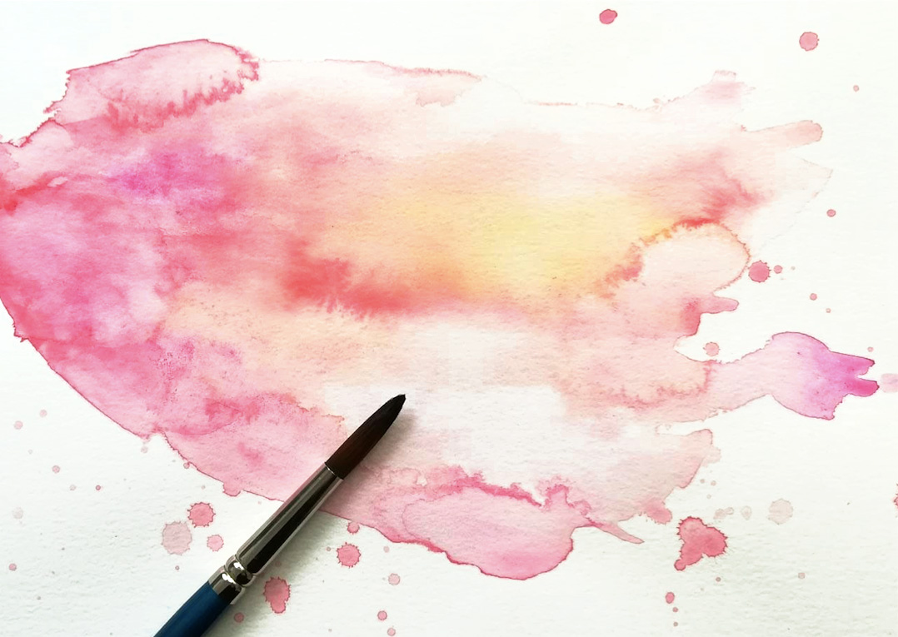
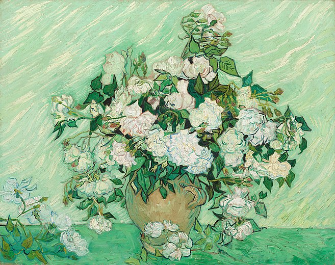
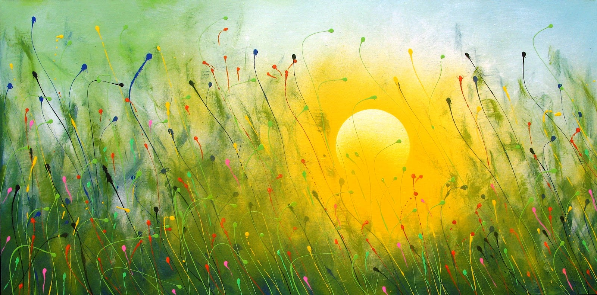

Técnicas y Materiales Artísticos
Objetivos
- acuarela, óleo, acrílico
Contenido:
La pintura es una de las formas más antiguas y veneradas de expresión artística. A lo largo de la historia, se han desarrollado diversas técnicas y medios para pintar, cada uno con sus características únicas, ventajas y desafíos. Entre los más populares se encuentran la acuarela, el óleo y el acrílico. A continuación, se exploran estos tres medios de pintura en detalle.
Acuarela
Características de la Acuarela
La acuarela es una técnica de pintura que utiliza pigmentos finamente molidos y mezclados con una base de goma arábiga, que actúa como aglutinante. Se aplica generalmente sobre papel y se diluye con agua, lo que permite obtener una amplia gama de transparencias y efectos de luz. Las acuarelas son conocidas por su luminosidad y frescura, ya que el papel blanco refleja la luz a través de las capas de pintura translúcidas.
Técnicas con Acuarela
 Existen varias técnicas para trabajar con acuarela, incluyendo el "húmedo sobre húmedo", donde se aplica pintura sobre una superficie de papel húmeda para crear efectos suaves y difusos, y el "húmedo sobre seco", que permite obtener líneas y detalles más definidos. También es común el uso de la sal, el alcohol y el raspado para crear texturas interesantes.
Aplicaciones de la Acuarela
La acuarela es ideal para trabajos rápidos y espontáneos, como bocetos de paisaje y estudios de color. También es popular en la ilustración y en el arte contemporáneo debido a su versatilidad y capacidad para capturar la luz y el color de manera vibrante. Sin embargo, requiere de una planificación cuidadosa y un control preciso, ya que las correcciones son difíciles de realizar.
Óleo
Características del Óleo
La pintura al óleo es una técnica que utiliza pigmentos mezclados con un aglutinante de aceite, generalmente aceite de linaza. El óleo es conocido por su textura rica y cremosa, así como por su capacidad para crear una amplia gama de colores intensos y duraderos. Esta técnica se caracteriza por su tiempo de secado lento, lo que permite a los artistas trabajar y re-trabajar la pintura durante largos períodos.
Técnicas con Óleo
 Las técnicas con óleo son variadas e incluyen el "impasto", que es la aplicación de capas gruesas de pintura para crear una superficie texturizada, y el "glaseado", donde se aplican capas finas de pintura transparente para crear profundidad y luminosidad. El óleo también se presta para técnicas de mezcla en húmedo, lo que permite transiciones suaves y gradaciones de color.
Aplicaciones del Óleo
El óleo es ampliamente utilizado en retratos, paisajes y naturalezas muertas debido a su capacidad para representar detalles minuciosos y su durabilidad. Grandes maestros de la pintura, como Leonardo da Vinci y Rembrandt, utilizaron óleo para crear algunas de las obras más famosas de la historia del arte. A pesar de su versatilidad, el óleo requiere un manejo cuidadoso de los solventes y una correcta ventilación debido a los productos químicos involucrados.
Acrílico
Características del Acrílico
El acrílico es una pintura a base de pigmentos suspendidos en una emulsión de polímero acrílico. Es conocido por su versatilidad, secado rápido y durabilidad. Una de las características distintivas del acrílico es su capacidad para adherirse a una amplia variedad de superficies, incluyendo papel, lienzo, madera y metal.
Técnicas con Acrílico
 El acrílico permite una gran variedad de técnicas, desde lavados transparentes que imitan a la acuarela hasta aplicaciones gruesas y texturizadas similares al óleo. Debido a su rápido tiempo de secado, los artistas pueden aplicar múltiples capas en una sola sesión de trabajo. Además, el acrílico puede ser diluido con agua para crear efectos de lavado o mezclado con geles y pastas para agregar textura y volumen.
Aplicaciones del Acrílico
El acrílico es popular en el arte contemporáneo y abstracto debido a su flexibilidad y resistencia. Es utilizado en murales, trabajos mixtos y esculturas pintadas, así como en lienzos tradicionales. Su capacidad para secar rápidamente y su resistencia a la decoloración hacen que sea una elección favorita para artistas que buscan una solución práctica y duradera.
Conclusión
La acuarela, el óleo y el acrílico son tres técnicas de pintura que ofrecen una amplia gama de posibilidades creativas. Cada medio tiene sus propias características y técnicas, lo que permite a los artistas elegir el que mejor se adapte a su estilo y necesidades específicas. La acuarela destaca por su luminosidad y frescura, el óleo por su riqueza y durabilidad, y el acrílico por su versatilidad y rapidez. Juntas, estas técnicas enriquecen el mundo del arte y permiten a los artistas explorar y expresar su creatividad de manera única y poderosa.